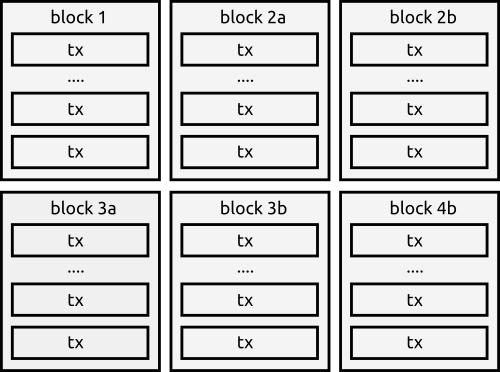
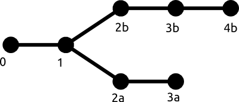

A document describing the functioning of the organize algorithm.
New blocks when they first come in are added to the orphans pool. The pool does not order the blocks. To trace a chain of blocks from an endpoint you have to keep looking up the previous block as you go backwards.
Assuming we have a valid genesis block, then this pool would produce 2 chains like this:
We loop through every block in the orphan's pool, setting each block to processed each loop. This stops us re-processing a block when a new block is added again to the pool, re-triggering the organize algorithm.
The blockchain is only ever stored as one main chain. In the blockchain database is only stored the currently accepted history. Blocks added to the blockchain are taken out of the orphan's pool, and returned back to the pool when removed from the blockchain.
If we have the chain:
0 -> 1 -> 2a -> 3a
Then the remaining blocks in the orphan pool are 2b, 3b, 4b. Block 4b comes into the pool and will trigger a re-organize. When we run the organize algorithm, we find out that the chain 2b, 3b, 4b has greater difficulty.
0 -> 1 -> 2b -> 3b -> 4b